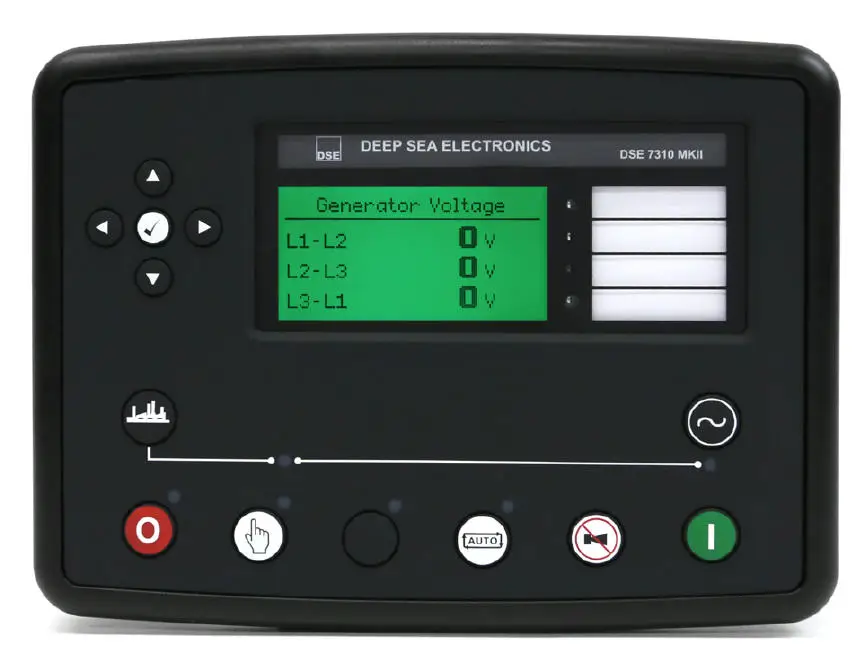
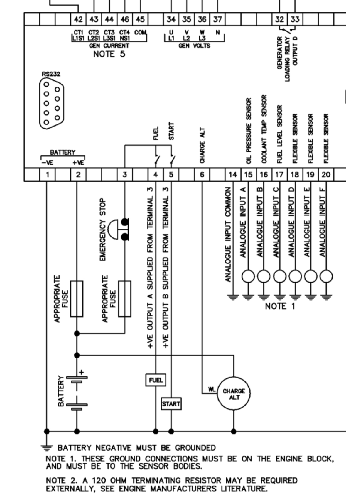
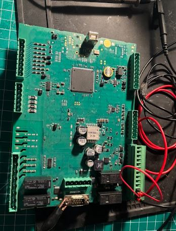

A brand-new Wacker Neuson generator came into the shop with a no-crank no-start condition. It was found that there was no voltage present on the starter output pin of the controller during crank attempts. The DSE 73110 Mk II controller was replaced under warranty, but I was fortunate enough to be able to keep the old one to bring home and try to repair it.

I sourced a schematic to verify pinout so that I could properly get the unit to start a crank attempt on the bench. After reviewing the diagram, I supplied 14-24VDC to the supply pins and jumpered out the E-Stop signal pin to B+ voltage.


With power applied and the E-Stop bypassed, I attempted to activate the starter output by following the startup sequence on the controller. As expected, the complaint was verified - no voltage output present on the starter pin during crank attempts.
With the condition verified, it was time to start following the output path upstream. Visual inspection revealed no clues. I noted that I could hear the relay contacts click during cranking, so I was not very worried about the control side of the relay. Being that this was a brand new controller, I began to heavily suspect a cold solder joint either on the relay output pin itself or on the joint for the pin header. I couldn't yet rule out that possibly the power input to the contact side was missing but this could quickly be ruled out after taking some basic measurements with my meter.
Without a block diagram of the board, I had to physically feel for which relay was clicking when the starter was comamnded on. I verified that power was present on the contact side input, which only left testing for power on the output. This is when something interesting happened: I had no output and wondered if I just didn't have good contact with my probe. So I scratched up the top of the solder joint with my fiberglass pen and remeasured. I still didn't get anything at first, but when I pushed down a little harder with my probe, I suddenly had 12 volts present. I repeated the startup procedure and retested at the pin header to find that I now had the starter signal present.
It seems as though there was a cold solder joint on the output pin of the relay, and just the pressure from pushing on it with my meter probe recreated a connection. I quickly reflowed all the joints on that relay to be thorough, and then decided I wanted to put the circuit under some load to verify the repair. To do this, I used a large 12 volt work light that draws ~3 amps. 3 amps is considerably less than the pull-in/holding current of the starter solenoid but still enough that it would expose any additional poor connections or issues.
The light shone brightly during crank attempts, verifying that the starter output circuit was now complete and capable of carrying a load. These controllers are very expensive, so this unit will make a great spare to keep at the shop for a rainy day.